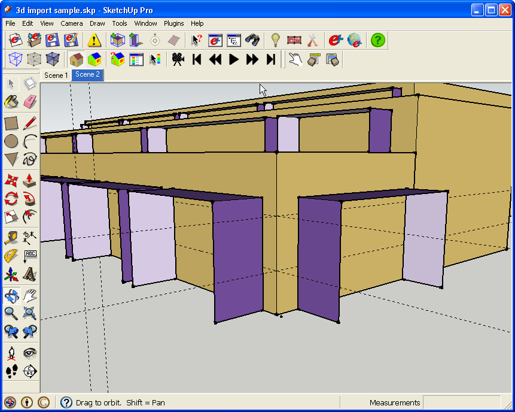

Convert 3-D CAD Models to EnergyPlus
Sources of 3-D Models
- 3-D models could come from SketchUp, AutoCad, Revit, Microstation, direct from Google Earth, or some other CAD application.
- The model used in this tutorial came from Google's 3D Warehouse but converting 3-D models from other sources would share a similar workflow.
- Whichever 3-D model you use for reference, you should probably wrap it into a single group or component so you can show and hide it easily.
Add Zones
- The first step is to determine how the 3-D model should be converted to a thermal model for EnergyPlus. This requires engineering judgment and depends on the needs of the analysis. In this example, the following model will be converted to a three-zone EnergyPlus model with shading groups around the windows.
(Credit for 3D Warehouse Model: Google)
- Create a new zone and open it for drawing.
- In this case it is easier to draw the roof first instead of drawing the ground first, which would be typical. Faces drawn off of the ground plane set face normal according to vertex entry order.
- If you draw with the line tool and follow the right hand rule (start with any point and draw the rest of your face going around counterclockwise) the surface normal will point up, which is correct for a roof.
- If you use the rectangle tool, it is hard to predict which way the surface normal will point.
- If your normal is reversed, OpenStudio will make it a floor. You will recognize this by the color, or you can use the Object Info Window or Information Tool. If this happens, use the Object Info Window to turn the surface into a roof before you continue. Verify that the darker surface (outside) is pointing up, right-click and choose Reverse Face if it is not.
(Credit: David Goldwasser/NREL)
- Use the Push/Pull tool to extrude the roof into a 3-D object. You can use SketchUp's inference engine to snap to an object in the original model that is on the ground plane. Verify that the walls and floor are correctly identified.
(Credit: David Goldwasser/NREL)
- Push the roof surface down from the top of parapet to the roof.

(Credit: David Goldwasser/NREL)
- You can see the three zones overlaid with the architectural model. X-ray mode is on to make everything translucent.

(Credit: David Goldwasser/NREL)
- Turn off the original architectural model so you see only the EnergyPlus zones.

(Credit: David Goldwasser/NREL)
Add Shading Surfaces
- To create the shading surfaces, first make a shading group and then use SketchUp's line tool and the inference locks to draw three shading surfaces associated with a window. Once you have drawn one set of shading surfaces you can use the Move/Copy tool to make multiple copies if the shading geometry is the same.

- Following is the model after all the shading groups are added.
Add Sub-surfaces
- You may be able to copy or draw over the existing window geometry from the architectural model while editing surfaces in your zones to create subsurfaces.
- This model does not have vertices of the windows for inferencing, the windows are only present as part of reference 3-D model's photo texture. Create temporary construction guides from the photo texture similar to the 2D import tutorial.

(Credit: David Goldwasser/NREL)
- The last screenshot shows a split model with the architectural model on the left and the OpenStudio model on the right. Some architectural details are not included in the EnergyPlus model. Putting thought into how you make your zones and other objects will improve the accuracy of your energy analysis and speed up simulation time.

(Credit: David Goldwasser/NREL)
|